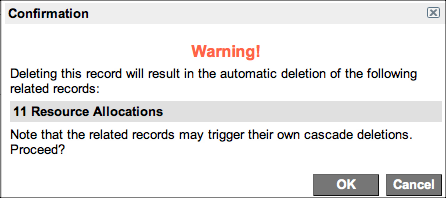

Working with Resource Plans
| |
Note: This article applies to Fuji and earlier releases. For more current information, see Resource Plans at http://docs.servicenow.com
The ServiceNow Wiki is no longer being updated. Visit http://docs.servicenow.com for the latest product documentation. |
Contents
1 Overview
Resource plans are the key element in resource management. Resource requesters, such as project managers, create resource plans to ask for resources, track effort, and track costs. Resource managers modify and approve resource plans before the plans are used.
The normal workflow for a resource plan is:
- Planning
- Requested
- Approved
- Completed
The Change state is also available for resource plans that require modifications.
Resource requesters create resource plans during the Planning state and then request approval from resource managers. This moves the resource plan into the Requested state. Resource managers approve or reject the plan, and close the plan.
Resource Management supports time zones, which are important in the My Calendar and Resource Console modules.
2 Using Time Zones in Resource Plans
Time zones are important in resource management if the users and groups doing resource tasks are in different locations. Users maintain their time in the My Calendar module and resource managers use the Resource Console to assign tasks to various users.
All users are assigned a schedule. Schedules can be floating or time zone specific. A floating schedule is the same in any time zone. For example, if a resource manager in Amsterdam sets a floating schedule for 8:00A.M.–5:00P.M., a user in San Jose sees the schedule as 8:00 A.M.–5:00 P.M. When a schedule is defined in a specific time zone, users in different time zones see the schedule with their own time zone applied. For example, if the resource manager sets a time zone specific schedule for 8:00 A.M.–5:00 P.M. in Amsterdam, the San Jose user sees the schedule as 11:00 P.M. of the previous day to 7:00 A.M. on the current day because the San Jose time zone is nine hours behind the Amsterdam time zone. If a user schedule changes, all time calculations change automatically.
For more information, see:
3 Creating Resource Plans
As a resource requester, you can create a resource plan from the Resource Management application, a project, or a project task. You can edit and adjust the plan until you submit it for approval.
The resource plan can request a specific group to work on plan tasks. After you submit the plan for approval, a resource manager can then allocate specific users within the requested group. The cost of each user is based on the user's rate card. To have users from different groups work on plan tasks, create multiple resource plans.
To create a resource plan from the Resource Management application:
- Navigate to Resource Management > Resource Plans > All.
- Click New.
- Fill in the fields, as appropriate (see table).
- Right-click the form header and select Save.
- The plan is saved and placed in the Planning state. Saving the plan before clicking the Submit button enables you to determine whether the resources you want are available and modify the resource plan as necessary.
| Form Fields | Field Descriptions |
|---|---|
| Number | [Read-only] Automatically generated identification number for the plan, starting with RPLN. |
| Resource Type | Category of resource. Select Group Resource to select a group or User Resource to select an individual user. |
| Group Resource / User Resource | Specific group or user resource to associate with the plan. |
| Planned Hours | Estimated number of work hours required to complete all resource plan work. If the resource plan is associated with a hierarchy of parent and child projects, the number specified in the Planned Hours field rolls up to the parent project to give the resource requester a holistic view of resource planning for the entire project. This field accepts only integer values. |
| Allocated Hours | [Read-only] Total hours that the resources are allocated to resource plan work. This value is rolled up from the hours specified on all resource allocations associated with the plan. |
| Actual Hours | [Read-only] All hours recorded on the time cards of users who completed plan work. |
| Task | Task the plan applies to. If the resource plan was created from a project task, the task number appears here. |
| Start Date | Start date for the resource plan. By default, this shows the Planned start date of the associated project record or task record. Edit the default date, if necessary.
Resource plan dates do not automatically change if the associated project task dates change. |
| End Date | End date for the resource plan. By default, the date is derived from the Planned end date of the associated project record or task record. Edit the default date, if necessary. |
| Planned Cost | [Read-only] Amount in Planned Hours multiplied by the hourly rate of the specified Group Resource. This is a first draft estimate of the resource plan cost. |
| Allocated Cost | [Read-only] Amount on all resource rate cards multiplied by total allocated hours. Used to give a more accurate estimation on the cost of the plan when it is being allocated and approved. |
| Actual Cost | [Read-only] Sum of user costs and hours. Based on the same time cards used for the Actual Hours, the actual cost is calculated using the cost of each user and the hours the user worked. Used to inform resource requesters and resource managers of plan costs based on the actual hours that user resources added on their time cards. |
| Notes | Additional correspondence and information. |
To create a resource plan from a project or project task:
- Ensure that Resource Management is activated.
- Do one of the following:
- Navigate to Projects > Projects > All and open a project.
- Navigate to Projects > Project Tasks > All and open a project task.
- On the Resource Plan related list, click New.
- The Resource Plan form appears.
- Fill in the fields, as appropriate (see table, above).
- Right-click the form header and select Save.
- The plan is saved and placed in the Planning state. Saving the plan before submitting it enables resource requesters to determine whether the resources they want are available and modify the resource plan as necessary.
- Follow the steps in Viewing Resource Availability.
{kind=link}
3.1 Viewing Resource Availability
Before submitting a resource plan, resource requesters should check the availability dashboard to see if the resources they want are already committed. The dashboard shows the time blocks that the resources are available (in green), busy (in red), and assigned to the open resource plan (in blue). The dashboard shows all activities for all requested users, including activities they enter on their personal calendars.
- Navigate to Resource Management > Resource Plans > All.
- Open a resource plan.
- In Related Links, click View Resource Availability.
- The availability dashboard appears in a new tab or window.
- The dashboard shows user or group availability on top and the current resource plan on the bottom.
- The resource plan start date is shown as a green vertical line and the end date is shown as a red vertical line through the group availability dates on top.
- The resource time box colors in the top half of the console represent the following:
- Red: the resource is allocated to other resource plans during this time period.
- Green: the resource is available during this time period.
- Blue: the resource is allocated to the selected resource plan during this time period.
- The number of work hours that the resource is allocated appears for each day, week, or month.
- If the selected resources are not available for the required dates, the resource plan can still be submitted. The resource manager can choose to shift work and allocate the requested resources to the resource plan or even allocate other resources.
- [Optional] To change the view, do any of the following:
- [Optional] To filter the list, click Resource Filter and enter filter criteria.
- When finished, close the tab or window.
{kind=link}
{kind=link}
4 Requesting Plan Approval
After the resource plan is complete, resource requesters ask for approval from the resource manager. While the resource plan is in the Requested state, resource requesters cannot edit the plan. If modifications are necessary, the resource requester must wait until the resource plan is in the Approved state and request a change.
- Navigate to Resource Management > Resource Plans > All.
- Open a resource plan.
- Click Request on the form header.
- The resource plan moves to the Requested state. In the requested state, the resource manager adds resource allocations to the plan and approves or rejects the plan.
5 Approving and Rejecting Resource Plans
After a resource requester asks for resource plan approval, a resource manager can do one of the following:
- Allocate resources and approve the plan
- Reject the plan
When a plan is approved, the plan is placed in the Approved state. Allocated resources begin working on plan tasks at the assigned time.
When a plan is rejected, the plan is placed in the Planning state. The resource requester can edit the plan and click Request Change to submit the plan for approval again. The plan is placed in Change state where a resource manager can approve or reject the plan.
5.1 Approving Resource Plans
If you intend to approve the plan, be sure to allocate resources first. After the plan is approved, no modifications or allocation changes can be made unless a change is requested. Resource managers can approve plans from the Resource Plan form or from the Resource Console.
To approve a resource plan from the Resource Plan form:
- Allocate resources to the plan.
- Navigate to Resource Management > Resource Plans > Requested.
- Open the plan to approve.
- Verify all the information on the form, including the resource allocations.
- [Optional] Add Notes.
- Click Approve.
The plan is now in the Approved state and the form fields become read-only.
{kind=link}
To approve a resource plan from the Resource Console:
- [Optional] Verify that all resource allocations have been made by navigating to Resource Management > Resource Plans > Requested, opening the plan, and viewing the Resource Allocations related list.
- Navigate to Resource Management > Resource Console > Resource Console.
- In the Resource Plans related list, right-click a plan Number and select Approve.
5.2 Rejecting Resource Plans
Only plans that have no associated allocations can be rejected. If you need to reject a resource plan that has allocations, request a change.
To reject a resource plan from the Resource Plan form:
- Navigate to Resource Management > Resource Plans > Requested.
- Open the plan to reject.
- [Optional] Add Notes.
- Click Reject.
To reject a resource plan from the Resource Console:
- Navigate to Resource Management > Resource Console > Resource Console.
- In the Resource Plans related list, right-click a plan Number and select Reject.
6 Requesting Changes to Resource Plans
If a resource plan needs to be modified after it has been approved or rejected, the resource requester can request a change. After the modifications are made, the resource plan should be submitted for approval.
- Navigate to Resource Management > Resource Plans > Approved.
- Open the plan to modify.
- Click Request Change.
- The resource plan moves to the Change state in the workflow.
- Edit the plan.
- Do one of the following:
- Right-click the header bar and select Save to save the changes.
- Click Update to save the changes and request approval.
{kind=link}
7 Closing Resource Plans
After all associated tasks and projects are complete or canceled, a resource manager can move a resource plan to the Complete state.
- Navigate to Resource Management > Resource Plans > Approved.
- Open a plan.
- Verify all the information on the form.
- The Actual Hours and Actual Cost fields show the number of hours spent working on plan tasks and the resource costs. These fields are derived from time card information and cannot be edited on the resource plan.
- Verify that the resources have completed their work. If the allocations are no longer necessary, delete them.
- [Optional] Add Notes.
- Click Complete.
8 Deleting Resource Plans
While a resource plan is in any state, resource requesters and resource managers can delete the plan. Deleting a plan also deletes all associated resource allocations.
- Navigate to Resource Management > Resource Plans > All.
- Open a resource plan.
- Click Delete on the form header.
- A confirmation message appears.
- 
- Click OK.
- The resource plan and all associated allocations are removed. The resource plan does not appear in the list at Resource Management > Resource Plans > All.
{kind=link}
9 Accessing Resource Plans from Projects
All resource plans for all project tasks appear on the Resource Plan related list of the Project form, where resource requesters can access them. Any plan in the Planning state can be edited.
Important information includes:
- Planned Hours: hours the requester asked for when the plan was created.
- Allocated Hours: hours the resource manager allocated to the plan.
- % Allocation: a measurement of the the allocated hours against the planned hours. This value shows which projects might be over or under staffed. It is possible to have a % Allocation value over 100%.
- State: state of the plan.
{kind=link}
Personalize the related list to add or remove columns.
To access a resource plan from a project:
- Navigate to Project > Projects > All.
- Open a project.
- View the Resource Plan related list.
- For detailed information, click a resource plan Number.